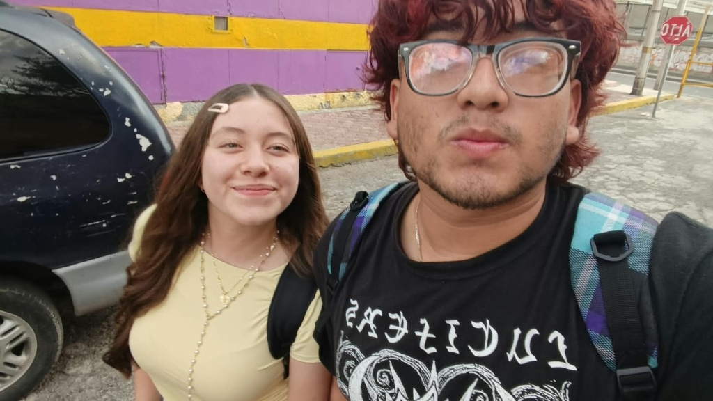

Dicen por ahí que existen almas hechas de luz, de colores pasteles y de una ternura infinita. Así es ella: mi niña bonita, con una sonrisa preciosa que es capaz de cruzar y calentar hasta los rincones más oscuros y fríos de mi mundo.
🧲💖
Polos Opuestos
El mundo de Barux
Y del otro lado estamos nosotros... Yo, con mi vida de color negro, cargando mis enojos y mis días desesperados, portando una sonrisa toda fea. Pero a pesar de todo ese caos, tú eres la única luz que quiero rozar, mi mugosha.

Mi Degis hemoshaaa... ✨🐧
Si alguien viera nuestros mundos desde afuera, pensaría que no tenemos nada en común. Tú tan llena de colores pasteles, tan linda, tan tierna en cada cosa que haces; y yo siempre de negro, con este estilo oscuro, tatuado y con mis días grises.
Pero la física no se equivoca, mi amor. Como dos polos opuestos que no pueden evitar encontrarse, nuestras diferencias son justo lo que nos amarra con más fuerza. Me fascina lo opuestos que somos, porque al final, esa distancia entre tu mundo y el mío se desvanece en el momento exacto en el que me miras.
Estoy eternamente enamorado de lo que eres, de lo que somos juntos, y de cómo esta conexión tan rara y hermosa nos sigue uniendo más y más conforme pasan los años. Eres mi vida, mi niña chiquita, mi todo entero... y te amo con toda el alma. 🖤🎀